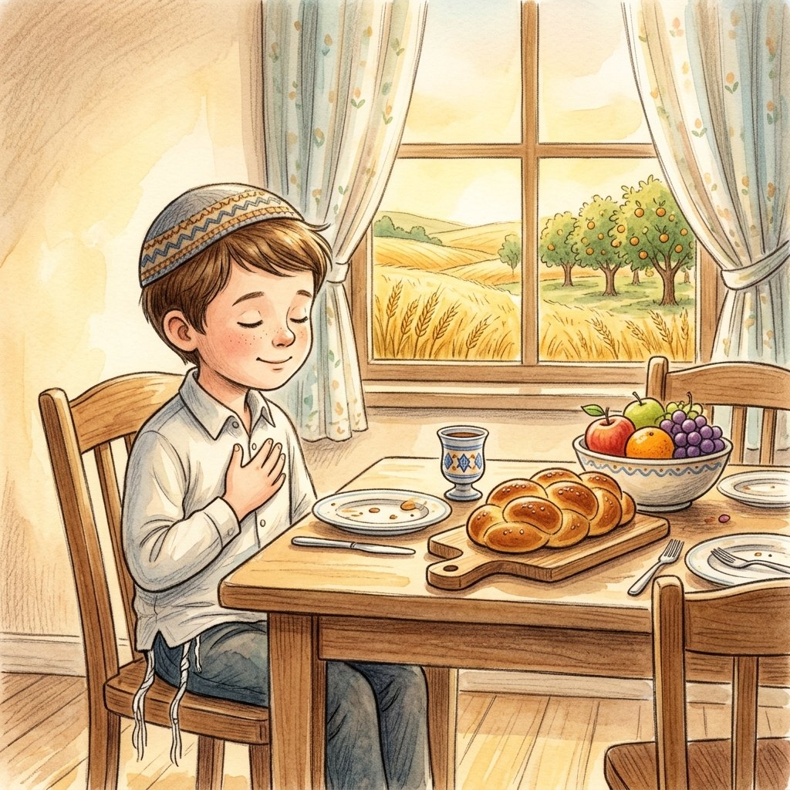

יש לי מושג
ברכת המזון
על הפרק: ידעני והחברים גמרו לאכול כריכים בגינה ורצים לשחק כדורגל, אבל הרב קורא להם מהספסל: ומה עם ברכת המזון? למה מברכים אחרי האוכל, מי באמת נותן לנו את הלחם, ומה יש בארבע הברכות.
0:00
--:--
לא הצלחנו לטעון את ההקלטה. בדקו את החיבור לאינטרנט ונסו שוב.